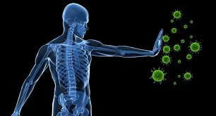
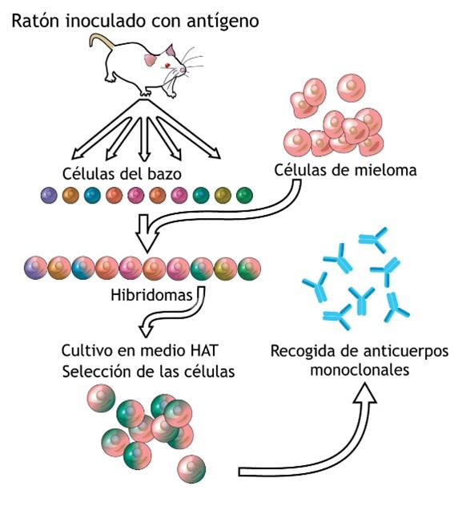
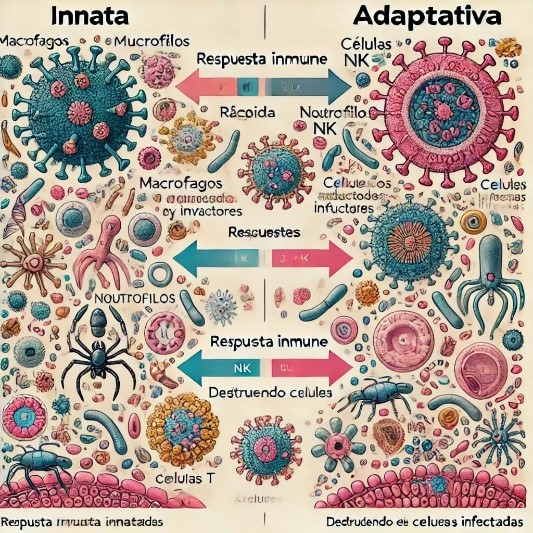
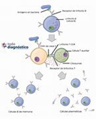
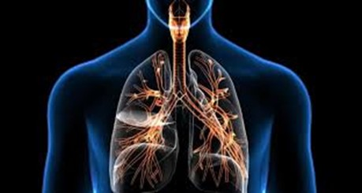
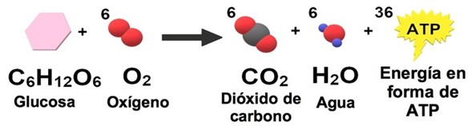
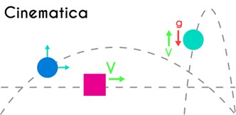
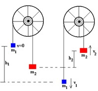
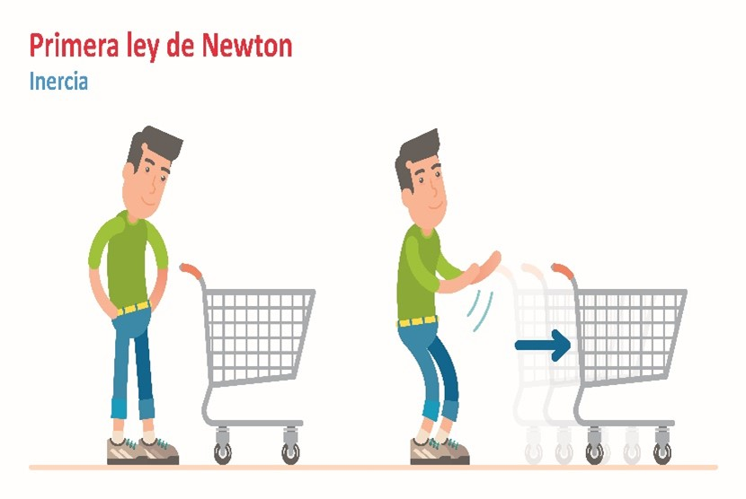
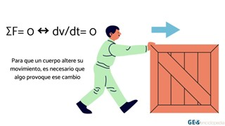

Biología
El sistema inmunológico y Enfermedades en nuestra vida
El sistema inmunológico es un complejo y fascinante sistema de defensa que protege nuestro cuerpo de una gran variedad de amenazas, desde bacterias y virus hasta células cancerosas. Esta red de células, tejidos y órganos trabaja en conjunto para identificar y eliminar los agentes patógenos invasores, manteniendo nuestro bienestar.
Componentes principales del sistema inmunológico
El sistema inmunológico se divide en dos ramas principales: la inmunidad innata y la inmunidad adaptativa.
• La inmunidad innata es la primera línea de defensa del cuerpo y funciona de forma general, atacando a cualquier invasor que se presente.
• La inmunidad adaptativa, por otro lado, es específica y aprende a reconocer y combatir a los invasores individuales.
Inmunidad innata: La inmunidad innata está compuesta por:
• Barreras físicas: La piel y las membranas mucosas, como las que recubren el tracto respiratorio, digestivo y urinario.
• Células fagocíticas: Células como los neutrófilos y los macrófagos que engullen y destruyen patógenos.
• Células NK: Células que matan células infectadas o cancerosas.
• Proteínas del complemento: Un grupo de proteínas que ayudan a destruir patógenos y a activar otras células inmunitarias.

Trastornos autoinmunitarios
Un trastorno autoinmunitario ocurre cuando el sistema inmunitario ataca por error los tejidos sanos del cuerpo, afectando a más de 80 tipos de enfermedades. La causa exacta se desconoce, pero se cree que microorganismos, medicamentos o factores genéticos pueden desencadenar esta respuesta anormal.
Producción y función de los anticuerpos
Los anticuerpos se pueden producir cuando el sistema inmunitario erróneamente considera el tejido sano como una sustancia dañina. Esto se denomina un trastorno autoinmunitario.
Cada tipo de anticuerpo es único y defiende al organismo de un tipo específico de antígeno. Los anticuerpos, también conocidos como inmunoglobulinas, son proteínas producidas por el sistema inmunológico que juegan un papel crucial en la defensa del cuerpo contra patógenos como bacterias, virus y toxinas. Son producidos principalmente por un tipo de células llamadas linfocitos B (o células B), que son un componente del sistema inmunitario adaptativo.
En resumen, los anticuerpos son una pieza clave del sistema inmune, detectando y neutralizando amenazas, activando otras células del sistema inmunitario y contribuyendo a la protección a largo plazo mediante la memoria inmunológica.

Respuesta inmune innata vs. Adaptativa
1. Ejemplos de Respuesta Inmune Innata
Fiebre: El aumento de la temperatura corporal es una respuesta innata que ayuda a inhibir el crecimiento de patógenos.
Inflamación: La inflamación en una zona lesionada es una señal de que el sistema inmune innato está respondiendo, permitiendo que las células inmunes lleguen rápidamente al sitio de la infección.
2. Ejemplos de Respuesta Inmune Adaptativa
Vacunas: Funcionan entrenando el sistema adaptativo para reconocer y recordar un patógeno sin necesidad de que ocurra la infección real.
Alergias: Son un ejemplo de una respuesta adaptativa "exagerada", donde el sistema adaptativo responde de manera inapropiada a sustancias que normalmente no son dañinas.
3. Interacción entre los dos sistemas
La respuesta inmune innata activa a la adaptativa cuando no puede eliminar el patógeno. Las células dendríticas, por ejemplo, presentan fragmentos de patógenos a los linfocitos T, desencadenando la respuesta adaptativa.
Ambos sistemas trabajan juntos: Mientras que la respuesta innata intenta contener la infección de inmediato, la adaptativa se encarga de eliminar el patógeno a largo plazo y generar memoria inmunológica.
4. Aplicaciones en enfermedades
Enfermedades autoinmunes: En estos casos, el sistema inmune adaptativo ataca por error las células del propio cuerpo, como en el lupus o la artritis reumatoide.
Inmunodeficiencias: Algunas personas tienen sistemas inmunes adaptativos debilitados (como en el VIH), lo que las hace más vulnerables a infecciones

Vacunas y su funcionamiento
1. Vacuna contra la hepatitis B
- Nombre científico: HepB
- Función: Previene la infección por el virus de la hepatitis B, que puede causar enfermedades hepáticas crónicas y cáncer de hígado.
2. Vacuna contra el sarampión
- Nombre científico: Measles, Mumps, Rubella (MMR)
- Función: Protege contra el sarampión, las paperas y la rubéola, enfermedades virales altamente contagiosas.
3. Vacuna contra la poliomielitis
- Nombre científico: IPV (Vacuna inactivada contra la poliomielitis)
- Función: Previene la poliomielitis, una enfermedad viral que puede causar parálisis.
4. Vacuna contra la gripe
- Nombre científico: Influenza vaccine
- Función: Protege contra las infecciones por virus de la gripe, que pueden causar enfermedades respiratorias graves.
5. Vacuna contra el tétanos
- Nombre científico: Td (Difteria y Tétanos)
- Función: Previene el tétanos, una enfermedad grave causada por una toxina bacteriana.
6. Vacuna contra el VPH (Virus del Papiloma Humano)
- Nombre científico: HPV vaccine
- Función: Previene infecciones por ciertos tipos de VPH que pueden causar cáncer cervical y otros tipos de cáncer.
7. Vacuna contra la COVID-19
- Nombre científico: Comirnaty (Pfizer-BioNTech), Spikevax (Moderna), entre otros.
- Función: Previene la infección por el virus SARS-CoV-2, que causa la COVID-19.
8. Vacuna contra la fiebre amarilla
- Nombre científico: Yellow Fever vaccine
- Función: Previene la fiebre amarilla, una enfermedad viral transmitida por mosquitos.

Memoria inmunológica y su importancia
La memoria inmunológica es la capacidad que tiene el sistema inmune de activarse rápidamente después de un segundo encuentro con un microbio. El sistema inmune tiene la capacidad de recordar una infección y puede responder más rápido y más vigorosamente ante un segundo encuentro con algún agente infeccioso.
La importancia de la memoria inmunológica incluye:
• Respuesta más rápida: En caso de una reinfección, las células de memoria pueden identificar y combatir el patógeno más rápidamente que durante la primera exposición.
• Mayor efectividad: La respuesta inmune es más fuerte y duradera.
• Vacunación: La memoria inmunológica es la base de la efectividad de las vacunas, que entrenan al sistema inmunológico para reconocer y responder a patógenos específicos sin causar la enfermedad.
• Prevención de enfermedades: Contribuye a la protección a largo plazo contra enfermedades infecciosas.

Aquí nuestro experimento
Química
La química en la cocina
Es muy común escuchar la interrogante ¿Para qué nos sirve la química en la vida?, sin embargo, la Química se encuentra inmersa dentro de nuestra vida, la encontramos de manera tan cotidiana; si miramos alrededor podemos comprobar que la mayoría de los fenómenos que ocurren en nuestra vida son fenómenos químicos que se mezclan con otros elementos o materia de la naturaleza, modificando sus propiedades y creando nuevas sustancias.
Y sin ninguna excepción en la cocina encontramos gran variedad de reacciones químicas. La química nos ha ayudado a conocer la influencia y mezcla de distintos ingredientes dan el sabor y particularidad de nuestro platillo favorito. Transformación de los alimentos cuando se someten a procesos culinarios
La química es el estudio de los cambios que experimenta la materia durante las reacciones químicas y su relación con la energía. La cocina es entonces un verdadero laboratorio: necesitamos modificar la composición de algunos alimentos para poder ingerirlos.
¿Qué reacciones químicas se dan en la cocina?
Estas son algunas de las reacciones químicas más comunes que se desarrollan en la cocina mediante diferentes técnicas.
• Combustión: Este proceso está muy presente en la mayoría de reacciones. Se trata de una reacción de la cocina química de oxidación, la cual tiende a desprender una gran cantidad de energía, en forma de calor y luz (fuego). Desde el punto de vista químico, existe un elemento que arde, el combustible y el que produce la combustión, el comburente, el cual genera oxígeno en forma de O2 gaseoso.
• Reacción de Maillard: Esta es una de las técnicas más conocidas en nuestra cocina a través de la cual se produce una reacción química. Consiste en caramelizar los hidratos de carbono aportando un color y sabor irresistible. Se suele utilizar para carnes, verduras, panes…
• Desnaturalización de proteínas: Las proteínas son modificadas cuando se produce un cambio en su estructura. El proceso de desnaturalización de las proteínas modifica su estructura y las rompe dando lugar a nuevos sabores y propiedades.
Gastronomía molecular: ciencia aplicada a la cocina
• Sous Vide con roner: Esta técnica consiste en la preparación de los alimentos al vacío, para lo que se cocinan sumergidos en líquido y sin oxígeno, a temperatura muy baja durante todo el proceso, que suele ser largo.
• Esferificación: Quizás una de las técnicas más conocidas y sorprendentes de la ciencia gastronómica sea la esferificación, un proceso en el que alimentos líquidos son tratados con aditivos como el alginato de sodio o similares para conseguir otorgarles más de una textura, una combinación más sólida con una más líquida.
La Respiración En la química
La función principal del aparato respiratorio es inhalar oxígeno y eliminar dióxido de carbono. El oxígeno llega a los alvéolos en los pulmones, donde se produce el intercambio gaseoso con la sangre, que transporta oxígeno al resto del cuerpo y regresa al corazón con dióxido de carbono. Aproximadamente el 30% del oxígeno inhalado se transfiere a la sangre.
Los tres procesos clave para la transferencia de oxígeno son:
Ventilación: entrada y salida de aire en los pulmones.
Difusión: movimiento de gases entre los alvéolos y la sangre sin gasto energético.
Perfusión: bombeo de sangre a los pulmones por el sistema cardiovascular, La circulación corporal conecta la atmósfera, rica en oxígeno, con las células del cuerpo que lo utilizan.
Conservación de alimentos químico
La conservación de alimentos mediante métodos químicos es fundamental para mantener la calidad y seguridad de los productos alimenticios. Estos procesos utilizan compuestos específicos para prevenir el deterioro, prolongar la vida útil y mejorar las propiedades sensoriales de los alimentos.
Importancia de la conservación de alimentos
1. Reducción del desperdicio: Los métodos de conservación ayudan a reducir el desperdicio de alimentos, aumentando su disponibilidad y accesibilidad.
2. Seguridad alimentaria: Previenen la contaminación y el crecimiento de microorganismos peligrosos, garantizando la inocuidad de los alimentos.
3. Mantenimiento de nutrientes: Algunos procesos conservan las propiedades nutricionales de los alimentos, como vitaminas y minerales.
Principios básicos de la química de los alimentos
• Composición Química: Los alimentos están compuestos por carbohidratos, proteínas, lípidos, vitaminas, minerales y agua, cada uno con propiedades químicas únicas.
• Reacciones Químicas: Procesos como la oxidación, hidrólisis y la reacción de Maillard afectan la calidad y estabilidad de los alimentos.
• Aditivos alimentarios y su función en la conservación
• Antioxidantes: Previenen la oxidación y el deterioro de los alimentos, manteniendo su color, sabor y valor nutricional.
• Conservantes: Inhiben el crecimiento de microorganismos, extendiendo la vida útil de los productos alimenticios
Aquí nuestro experimento
Física
La física es la ciencia que estudia las propiedades de la materia, la energía y las interacciones entre ellas. Se centra en el análisis de la materia, la energía, las fuerzas y las leyes que describen su interacción en el espacio y el tiempo. La física abarca una amplia gama de fenómenos naturales, desde los más pequeños, como las partículas subatómicas, hasta los más grandes, como las galaxias y el universo mismo.
Además, la física está profundamente entrelazada con otras ciencias, como la química, la biología y la geología. Por ejemplo, la biofísica estudia los principios físicos que subyacen en los procesos biológicos, mientras que la geoquímica utiliza los principios de la física para entender las dinámicas de la Tierra y otros planetas. En nuestra vida cotidiana, la física está presente en una amplia gama de aplicaciones: los automóviles que conducimos, los aviones que nos transportan, los teléfonos inteligentes que usamos y las fuentes de energía que alimentan nuestras casas dependen de los principios físicos. Las tecnologías modernas, desde la ingeniería hasta la medicina, se basan en el conocimiento acumulado de siglos de investigación física.
El movimiento es uno de los aspectos más fundamentales de la física y se refiere al cambio de posición de un objeto o cuerpo a lo largo del tiempo en relación con un sistema de referencia.
El estudio del movimiento se remonta a los tiempos de Aristóteles, pero fue formalizado por Isaac Newton en el siglo XVII con sus tres leyes del movimiento, que sentaron las bases de la mecánica clásica. Esto explica cómo el movimiento es un fenómeno omnipresente en la naturaleza, desde el movimiento de los planetas hasta el de las partículas subatómicas.
Objetivos del estudio del movimiento:
Describir cómo se mueven los objetos y por qué se mueven.
Explicar las causas del movimiento.
Formular leyes universales.
La Cinemática
“La física con respecto al movimiento de la materia”
La cinemática es una rama de la física que describe cómo se mueven los objetos sin tener en cuenta las fuerzas que lo causan, es decir, se enfoca en describir cómo se mueven los objetos, pero no por qué se mueven de cierta manera. Para lograrlo, la cinemática utiliza diferentes variables fundamentales, como la posición, velocidad, aceleración y el tiempo, para analizar y predecir el comportamiento del movimiento. Al describir un movimiento, la cinemática permite calcular trayectorias, velocidades y aceleraciones de objetos en diversas situaciones, tanto en movimientos lineales como curvilíneos.
Tipos de movimiento:
Movimiento rectilíneo uniforme (MRU): es un tipo de movimiento en el cual un objeto se desplaza a lo largo de una trayectoria recta y mantiene una velocidad constante, es decir, recorre distancias iguales en intervalos de tiempo iguales.
Movimiento rectilíneo uniformemente acelerado (MRUA): es un tipo de movimiento en el que un objeto se desplaza en línea recta y su aceleración es constante.
Movimiento circular: estudia objetos que siguen trayectorias circulares, como la Tierra alrededor del Sol.
Fórmulas básicas:
Velocidad media (v = d/t)
Aceleración (a = Δv/Δt)

La Dinámica
La dinámica estudia las causas del movimiento, es decir, las fuerzas que actúan sobre un cuerpo. Esta disciplina se centra en comprender cómo y por qué los objetos cambian su estado de movimiento, es decir, cómo las fuerzas aplicadas afectan la velocidad, la dirección y el comportamiento de los cuerpos. La dinámica se basa en dos leyes fundamentales del movimiento, formuladas por Isaac Newton, que permiten analizar situaciones en las que intervienen fuerzas.
Fuerza: Es una interacción que cambia o intenta cambiar el estado de movimiento de un objeto.
Clasificación de las fuerzas:
Fuerzas de Contacto: Las fuerzas de contacto son aquellas que se ejercen cuando dos objetos están en contacto físico entre sí. Estas fuerzas requieren que los cuerpos estén en contacto directo para que se produzcan, como la fricción y la tensión.
Fuerzas a Distancia: Las fuerzas a distancia son aquellas que actúan sobre un objeto sin necesidad de contacto físico. Se producen debido a campos de fuerza que están presentes en el espacio, como la gravedad y el electromagnetismo.
Fórmulas: F = ma (Fuerza = masa x aceleración).

Primera Ley de Newton (Ley de la Inercia)
Un objeto en reposo permanecerá en reposo, y un objeto en movimiento continuará moviéndose en línea recta a velocidad constante, a menos que una fuerza neta externa actúe sobre él.
Esta ley establece el concepto de inercia, que es la tendencia de los objetos a resistir cambios en su estado de movimiento. La inercia depende de la masa del objeto; cuanto mayor sea la masa, mayor será la inercia.
Ejemplo: Si un libro está sobre una mesa, permanecerá allí hasta que alguien lo empuje (aplicando una fuerza). Si un automóvil se mueve a una velocidad constante en línea recta, seguirá haciéndolo hasta que se aplique una fuerza, como el freno o un choque.
Inercia: Propiedad de los objetos de resistir cambios en su estado de movimiento.


Segunda Ley de Newton (Fuerza y Aceleración)
La aceleración de un objeto es directamente proporcional a la fuerza neta que actúa sobre él e inversamente proporcional a su masa. Esta relación se expresa mediante la fórmula:
F = m ⋅ a
donde:
F es la fuerza neta aplicada (en Newtons),
m es la masa del objeto (en kilogramos),
a es la aceleración resultante (en metros por segundo al cuadrado).